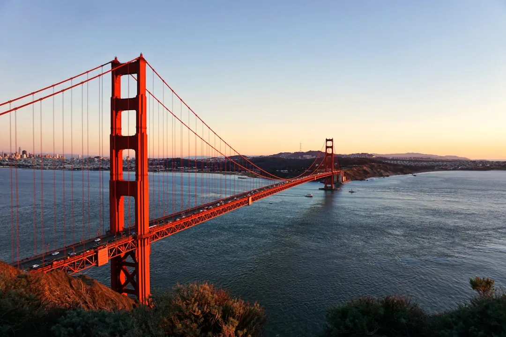

California Itineraries: Ready-Made Trip Routes & Day Plans
· By GoldenPath Guide Editorial Team
Somewhere around the third time you pull off Highway 1 to photograph the same stretch of coastline a second time, it hits you: the whole state is absurdly large, and it is not going to fit in a week. The urge to do everything is the most reliable way to spend your holiday in a rental car, watching scenery through the windshield.
These two itineraries exist to stop you from doing that. Each one sets a route, a pace, and a place to sleep each night, so the only decision left is where to stop for coffee. Pick the version that matches your trip, then feel free to bend it to your own taste.
Which Itinerary Fits You?
- 5-day Southern California — Los Angeles to San Diego via the coast. Suits first-timers and families who want a relaxed rhythm of beaches and big, recognizable sights without packing the schedule.
- 7-day Northern California — San Francisco, Napa and the Pacific Coast Highway down through Big Sur. Made for scenery, wine and that coastal drive people never quite shut up about, with good reason.
How the Routes Work
Both routes are built to avoid backtracking and keep each day’s driving to something you’ll actually enjoy. The pattern is simple: base yourself in a coastal town, spend the day exploring, then overnight somewhere within reach of the next morning’s first stop. That way most of your miles happen early, when the highway is still quiet.
- Keep travel light. You’ll be changing hotels often, and a smaller bag makes every move easier.
- Book lodging in advance. Santa Barbara, Monterey and the smaller coastal towns sell out in peak season — and prices climb as the dates get closer.
- Allow buffer time. Los Angeles traffic and Highway 1 construction can each add an hour. Don’t plan more than one big stop a day.
Can I Combine Them?
Yes, and a lot of travelers do. With two weeks you can weld the routes into one long north-to-south coastal journey: down from the Bay Area through Big Sur and Santa Barbara, ending in San Diego. It’s the classic California coast trip, and it earns the label.
Fresh Routes Every Season
Whichever route you choose, hold on to one rule: don’t crowd the days. California punishes a packed schedule and rewards anyone willing to pull over for a view.
Explore More
For detail on the cities and parks along these routes, dig into the California Destinations guides. For timing and packing, head to the Travel Tips.
5-Day SoCal: Day-by-Day Mileage
The southern route totals roughly 300 driving miles across five days, with no single leg over 100 miles. Day one stays inside Santa Monica — under 10 miles. Day two loops Hollywood, Griffith and Beverly Hills at about 25 miles round-trip from the beach. Day three runs Santa Monica to Huntington Beach at 45 miles, up to two hours in weekend traffic, so leave by 10 a.m. Day four covers Huntington Beach to La Jolla at 90 miles via I-5, around 90 minutes outside rush hour. Day five stays inside San Diego, under 20 miles. Fuel for the whole loop runs $45 to $65 in a standard rental. The rhythm works because every overnight sits within reach of the next morning's first stop — nobody starts a day with a long repositioning drive.
7-Day NorCal: Day-by-Day Mileage
The northern route totals roughly 550 miles over seven days, and the Big Sur leg sets the pace. San Francisco to Napa runs 60 miles, about 90 minutes over the Golden Gate. Napa to Monterey via the inland freeway runs 200 miles and takes three and a half hours — the price of pairing wine country with the coast. Monterey to Big Sur to Morro Bay covers 120 miles of Highway 1 in four to five hours with stops; fuel up in Monterey because stations thin out south of Big Sur and prices jump $1 or more per gallon. Morro Bay back to San Francisco runs 230 miles on US-101 in under four hours. Budget $90 to $120 in fuel. Winter travelers should check Highway 1 closure reports before committing to the coastal leg, since slides can force a 100-mile inland detour.
When to Book and How to Bend the Routes
Reserve Big Sur-area lodging two to three months ahead for May through October; winter dates can wait until three weeks out, with rates 20 to 30 percent lower. Napa tasting reservations open 30 to 60 days ahead at the popular rooms, where fees run $40 to $75 per person and several waive the fee with a bottle purchase. Bending the routes is expected: wine lovers add a second Napa night and drop a San Francisco day, while beach-first travelers cut Monterey short and add the extra night in Santa Barbara, where State Street hotels run $200 to $300. Families do well to swap one driving day for a full beach day — the itineraries hold up fine with a rest day inserted anywhere along the coast. Confirm Highway 1 status and Napa reservation policies the week before departure, since both change by season.